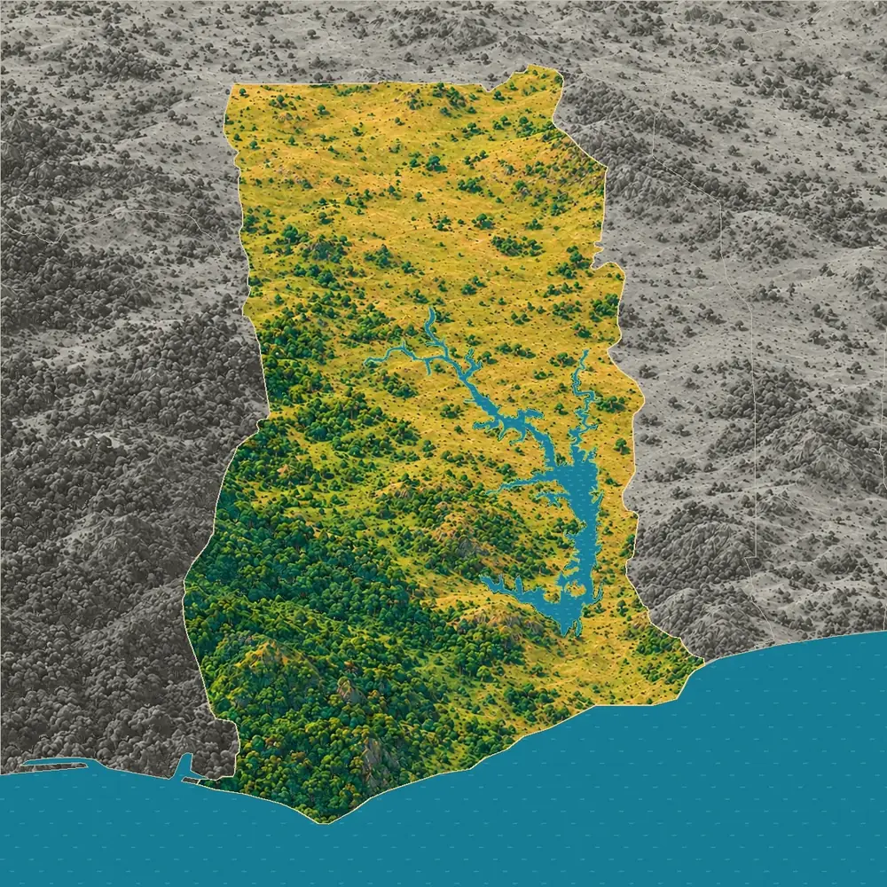
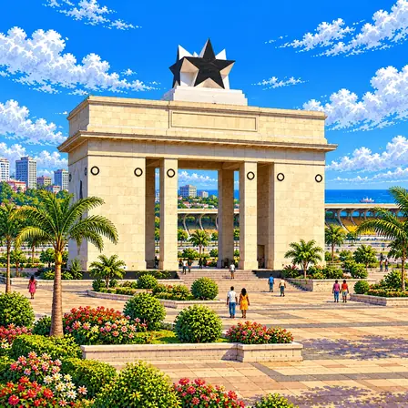
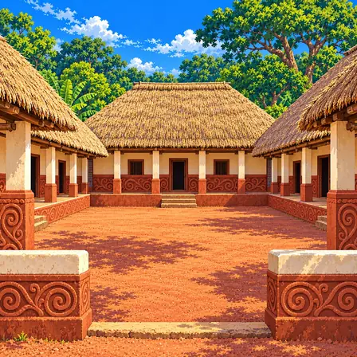
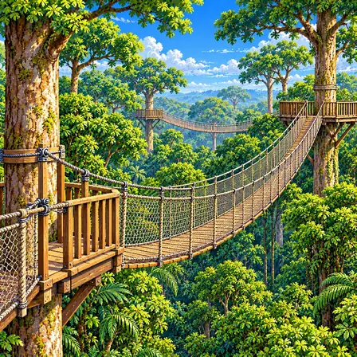
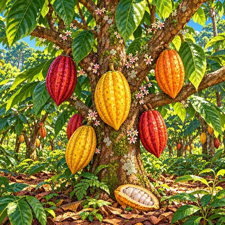
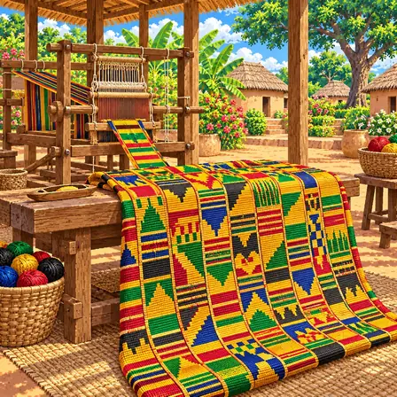
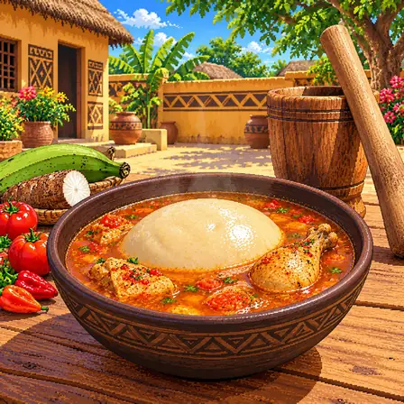
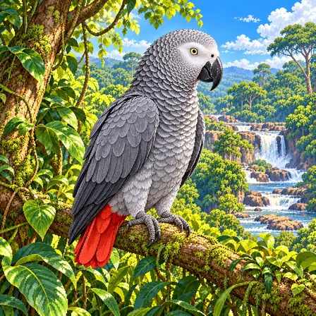
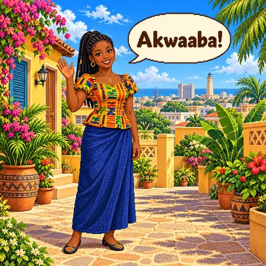

남쪽 숲과 북쪽 사바나
가나 땅의 약 3분의 1인 남쪽은 늘 푸른 숲과 건기에 잎을 떨구는 숲이 덮고, 나머지는 풀밭에 나무가 드문드문 선 사바나예요. 남서쪽에는 해마다 비가 2,000mm 가까이 오지만, 북쪽 끝은 1,000mm 정도예요.

가나는 남쪽은 울창한 숲, 북쪽은 풀밭에 나무가 드문드문 선 사바나예요. 가운데에는 사람이 강을 막아 만든 아주 큰 볼타 호수가 있어요.
가나는 기니만 해안에서 북쪽으로 갈수록 비가 적어져, 남서쪽의 열대 숲이 북쪽 사바나로 바뀌어요. 가운데에는 볼타 호수와 그 남쪽 가장자리의 콰후 고원이 있고, 동쪽 토고와의 경계를 따라 낮은 산줄기가 이어져요.
가나 땅의 약 3분의 1인 남쪽은 늘 푸른 숲과 건기에 잎을 떨구는 숲이 덮고, 나머지는 풀밭에 나무가 드문드문 선 사바나예요. 남서쪽에는 해마다 비가 2,000mm 가까이 오지만, 북쪽 끝은 1,000mm 정도예요.
동쪽 토고와의 경계를 따라 아콰핌-토고 산줄기가 남서쪽에서 북동쪽으로 이어져요. 그 가운데 아파자토(885m)가 가나에서 가장 높은 산으로 알려져 있어요.
1965년 볼타강에 아코솜보 댐을 세우자 강물이 골짜기를 따라 거꾸로 차올라 볼타 호수가 생겼어요. 넓이가 약 8,500km²로, 사람이 만든 호수 가운데 손꼽히게 넓어요.
남쪽 아샨티 지방의 보숨트위 호수는 둥근 우묵한 땅에 물이 고인 호수예요. 넓이는 약 49km²이고, 깊은 곳은 70m가 넘어요.
볼타 호수 남쪽 가장자리의 콰후 고원은 오래전 넓은 분지에 쌓인 모래가 굳은 사암으로 이루어져 있어요. 사암층은 두께가 250~300m나 되고, 층이 기울어 한쪽은 완만한 비탈, 다른 쪽은 가파른 절벽이 됐어요.
출처: British Geological Survey, Voltaian Basin workshop excursion guide
보숨트위 호수가 있는 둥근 우묵한 땅은 약 100만 년 전 커다란 운석이 떨어져 생긴 것으로 알려져 있어요. 호수와 둘레의 숲, 언덕은 2016년 유네스코 생물권보전지역이 됐어요.
출처: Ghana Tourism Authority, Lake Bosomtwi · UNESCO, New biosphere reserves 2016: Lake Bosomtwe (MAB International Coordinating Council)
가나에서 잘 알려진 도시, 역사유산, 자연, 식물, 문화, 음식, 동물, 인사말, 국기를 한 장씩 그렸어요.

아크라는 가나의 수도예요. 독립 광장에는 커다란 검은 별을 얹은 흰 문, 블랙스타 게이트가 서 있어요. 가나에서 사람이 가장 많이 사는 곳이에요.
아크라는 기니만을 마주한 가나 남쪽 바닷가에 있는 가나의 수도예요. 원래 가(Ga) 사람들이 고기를 잡고 장사를 하던 바닷가 마을이었고, 바다를 통한 무역이 활발해지면서 도시로 커졌어요. 1957년 가나가 독립하면서 수도가 됐고, 바닷가의 독립 광장에는 독립을 기념하는 블랙스타 게이트가 서 있어요. 흰 돌기둥 문 위에 커다란 검은 별을 얹은 이 문은 광장과 함께 1961년에 완성됐어요. 아크라가 속한 그레이터아크라주에는 2021년 약 545만 명이 살아, 가나에서 사람이 가장 많은 지역이에요.

아샨티 전통 건축물은 진흙과 나무로 지은 아샨티 사람들의 옛 건물이에요. 흙벽에 소용돌이와 동물 무늬를 도드라지게 새겼어요. 세계유산으로 보호받아요.
아샨티 전통 건축물은 가나 남부 쿠마시 북동쪽 마을들에 남아 있는 아샨티 사람들의 옛 신전 건물이에요. 18세기에 크게 번성한 아샨티 왕국의 모습을 보여 주는 마지막 건물들로, 나무와 대나무로 뼈대를 세우고 진흙을 발라 벽을 만들었어요. 네 채의 건물이 안마당을 둘러싸는 구조이고, 원래는 가파른 초가지붕을 얹었어요. 흙벽에는 소용돌이와 덩굴, 동물·새·식물 무늬를 도드라지게 새겼는데, 이 무늬는 저마다 뜻을 지닌 아딘크라 상징과 이어져요. 1980년 유네스코 세계유산에 등재됐어요.

카쿰 국립공원은 가나 남쪽의 울창한 열대 숲이에요. 높은 나무 꼭대기를 잇는 흔들다리가 있어요. 다리 위를 걸으며 숲속 새와 원숭이를 볼 수 있어요.
카쿰 국립공원은 가나 남쪽 바닷가에서 30km쯤 안쪽에 있는 열대 숲이에요. 일 년 내내 따뜻하고 비가 많이 와서, 늘 푸른 열대우림부터 건기에 잎을 떨구는 숲까지 펼쳐져 있어요. 넓이는 약 360km²이고, 숲 지붕 높이의 큰 나무들을 이은 길이 약 350m의 흔들다리 일곱 개(캐노피 워크웨이)가 있어요. 숲에는 아프리카숲코끼리와 원숭이, 수많은 새와 나비가 살아요. 사람들은 흔들다리 위를 걸으며 땅에서는 보기 어려운 나무 꼭대기의 생물을 가까이 볼 수 있어요.

카카오나무는 굵은 줄기에 바로 꽃과 열매가 달려요. 열매 속 씨를 말리면 초콜릿 원료가 돼요. 가나는 카카오를 아주 많이 길러요.
카카오나무는 가나 남부의 숲 지대에서 흔히 기르는 늘 푸른 나무예요. 아메리카 열대 지방이 고향으로, 큰 나무 그늘처럼 덥고 습한 곳에서 잘 자라요. 작은 분홍빛 흰 꽃이 가지뿐 아니라 굵은 줄기에 바로 피고, 그 자리에 럭비공 모양의 열매가 달려 노랗거나 붉게 익어요. 열매 속 하얀 과육에 싸인 씨를 발효시키고 말리면 초콜릿의 원료인 카카오 콩이 돼요. 가나에는 1879년 테테 콰르시가 씨앗을 들여와 심었다고 알려져 있고, 지금 가나는 코트디부아르 다음으로 카카오를 많이 생산하는 나라예요.

켄테는 가나의 화려한 천이에요. 좁고 긴 천 띠를 여러 장 짜서 나란히 꿰매 이어요. 축제나 졸업식 때 몸에 둘러 입어요.
켄테는 가나의 아샨티 사람들과 에웨 사람들이 짜는 화려한 천이에요. 좁은 베틀로 폭이 10cm쯤 되는 긴 띠를 짠 다음, 여러 장을 나란히 꿰매 이어 커다란 천을 만들어요. 금색과 초록, 빨강, 파랑 같은 실로 짠 기하학 무늬에는 저마다 이름과 뜻이 있어요. 아샨티의 본위레 마을에는 두 사람이 거미가 거미줄 치는 모습을 보고 짜는 법을 배웠다는 이야기가 전해져요. 예전에는 아샨티 왕이 큰 행사 때 입던 천이었고, 지금은 졸업식과 결혼식, 축제 때 많은 사람이 몸에 둘러 입어요.

푸푸는 카사바와 플랜틴을 절구에 찧어 만든 쫀득한 음식이에요. 동그랗게 빚어 수프에 담가 내요. 손으로 조금씩 떼어 수프에 적셔 먹어요.
푸푸는 삶은 카사바와 플랜틴(요리용 바나나)을 나무 절구에 넣고 찧어 만든 가나의 쫀득한 반죽 음식이에요. 한 사람이 긴 나무 절굿공이로 내리찧으면 다른 사람이 손으로 반죽을 뒤집으며 물을 조금씩 더해, 부드럽고 끈기 있게 만들어요. 동그랗게 빚은 푸푸는 토마토와 고추로 끓인 맑은 '라이트 수프', 땅콩 수프, 야자열매 수프에 담가 내요. 손으로 조금씩 떼어 수프에 적셔 먹는 것이 전통적인 먹는 법이에요. 요즘은 기계로 찧기도 하지만, 절구로 찧어야 제맛이 난다는 사람이 많아요.

아프리카회색앵무는 잿빛 몸에 빨간 꼬리를 가진 앵무새예요. 아주 영리하고 소리를 잘 흉내 내요. 숲이 줄어 지금은 보호가 필요해요.
아프리카회색앵무는 가나 남부의 열대 숲에 사는 몸길이 약 33cm의 앵무새예요. 온몸이 잿빛 깃털로 덮여 있고 꼬리만 선명한 빨간색이며, 눈 둘레에는 깃털 없는 흰 피부가 있어요. 무리를 지어 날아다니며 기름야자 열매와 씨앗, 과일을 먹고, 큰 나무 구멍에 둥지를 틀어요. 여러 소리를 흉내 내는 능력이 뛰어나고 영리하기로 유명해요. 하지만 숲이 줄고 많이 잡혀 가서 가나에서는 약 20년 사이에 90% 넘게 줄었고, 지금은 멸종 위기종으로 보호받아요.

아콰아바(Akwaaba)는 '어서 오세요'라는 가나의 인사예요. 손님을 반갑게 맞을 때 써요. 가나에서 가장 많이 쓰는 토박이말 트위어예요.
Akwaaba는 '아콰아바'라고 읽는 트위어 말로, '어서 오세요', '환영해요'라는 뜻이에요. 손님이 찾아오거나 여행자가 공항에 내렸을 때, 또 가족이 일을 마치고 집에 돌아왔을 때 반갑게 맞으며 이렇게 말해요. 트위어는 아칸어의 한 갈래로, 가나에서 가장 많은 사람이 쓰는 토박이말이에요. 아칸어는 소리의 높낮이에 따라 낱말 뜻이 달라지는 성조 언어예요. 가나의 공식 언어는 영어지만, 사람들은 일상에서 트위어를 비롯한 여러 토박이말을 함께 써요.

가나 국기는 빨강, 금색, 초록 세 줄로 되어 있어요. 가운데에 검은 별이 있어요. 1957년 독립한 날 처음 올려졌어요.
가나 국기는 위에서부터 빨강, 금색, 초록 세 가로줄이 놓이고, 가운데 금색 줄에 검은 별이 있어요. 테오도시아 오코가 공모에 낸 디자인으로, 1957년 3월 6일 가나가 독립한 날 처음 올려졌어요. 오코는 빨강은 독립을 위해 애쓴 사람들, 금색은 나라의 자원, 초록은 숲과 기름진 땅을 나타낸다고 설명했어요. 검은 별은 아프리카 사람들의 자유와 하나 됨을 뜻해요. 가나 축구 대표팀은 이 별에서 이름을 따 '블랙 스타스'라고 불려요.